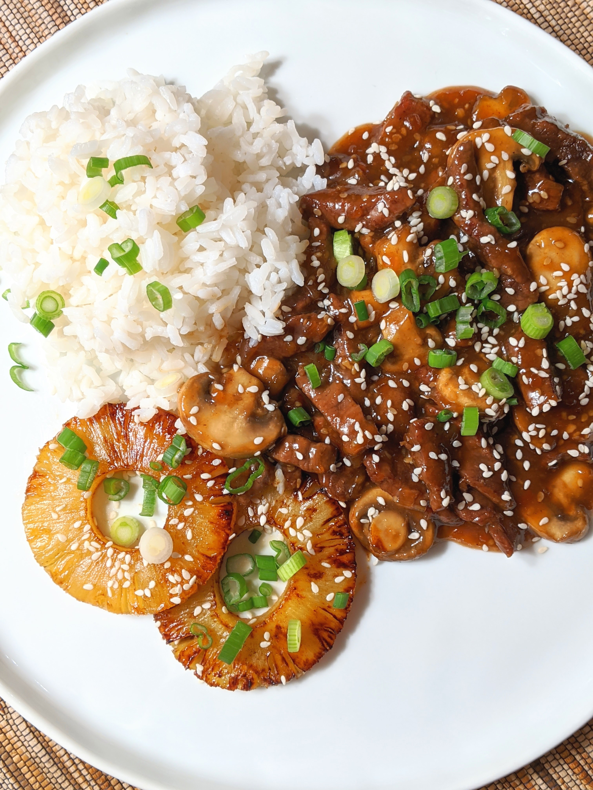

Home
Pineapple Teriyaki Chicken

Pineapple Teriyaki Chicken, this marinated, air fried dish with pineapple chunks,
and then glazed with a thickened pineapple juice, ginger, and garlic sauce, rivals the best of any takeout restaurant.
Serve over cooked rice.
Ingredients
- 1 pound skinless, boneless chicken breast
- 1 (20 ounce) can pineapple chunks in 100% pineapple juice
- 1/2 cup reduced-sodium soy sauce or coconut aminos
- 1/4 cup brown sugar or coconut sugar
- 2 tablespoons honey or agave syrup
- 4 cloves garlic, grated, mashed to a paste
- 1 tablespoon grated fresh ginger, mashed to a paste
- 1 tablespoon sesame oil
- 1 teaspoon cornstarch
- 3 green onions, sliced diagonally, or as needed, for garnish
- 1 teaspoon sesame seeds, or as needed, for garnish
Cooking Steps
- Gather all ingredients.
- Trim chicken breast of any visible fat, then cut chicken into 1 1/2-inch pieces. Set aside.
- Drain pineapple juice and add to a bowl; reserve pineapple chunks for later use. Add coconut aminos, coconut sugar, and agave syrup to the bowl. Use a microplane grater to grate garlic and ginger, mash until a paste forms, and add to the bowl. Stir in sesame oil.
- Pour half the marinade mixture into a resealable plastic bag; reserve remaining marinade. Add the chicken pieces into the bag, seal the bag, and refrigerate for 1 hour.
- Preheat an air fryer to 400 degrees F (200 degrees C) for 5 minutes, or according to manufacturer’s instructions. Remove chicken from marinade, discard any marinade in the bag, and air fry chicken until no longer pink at the center and juices run clear, about 10 minutes. Add pineapple chunks to the air fryer for the last 2 minutes, if desired.
- Meanwhile add reserved marinade to a large skillet and whisk in cornstarch until smooth; cook over medium-high heat until thickened, about 5 minutes. Add in chicken and pineapple; toss until coated. Garnish with green onions and sesame seeds and serve immediately.
Editor's Note
Nutrition data for this recipe includes the full amount of marinade ingredients. The actual amount of marinade consumed will vary.